Bulletins neige · novembre 2026
Des bulletins neige quotidiens pour les skieurs : où est la neige, ce qui arrive et où skier, d'après la carte de neige SnowScope et les stations de mesure. Chaque chiffre vient des données du jour.


Les Grands Montets ont enregistré 74 cm de neige fraîche ces dernières 72 heures, avec d'autres chutes prévues pour les jours à venir, selon notre modèle au 17 novembre 2026.

La neige arrive en France : jusqu'à 87 cm dans la semaine. Couverture, neige fraîche, stations et jours à venir en France le 17 novembre.

De la neige fraîche est tombée de manière inégale sur les montagnes suisses. Les Alpes valaisannes ont reçu 92 cm en trois jours ; l'Oberland bernois 54 cm. Données du 17 novembre.

Orelle enregistre 42 cm, proche des 53 cm typiques pour la mi-novembre. Des chutes de neige prévues sur les Alpes au cours des trois prochains jours.


Whistler Blackcomb a enregistré 76 cm de neige fraîche au cours des dernières 72 heures, et Mount Cain Alpine Park a également reçu 64 cm, en date du 16 novembre 2026.

France ou Suisse ? Où la neige est meilleure le 16 novembre. Couverture, neige fraîche, stations et jours à venir en France le 16 novembre.

Le modèle de neige prévoit 112 cm en Suisse d'ici le 24 novembre, avec 29 cm le 17 novembre. L'eau douce s'accumule dans les hautes Alpes au cours de la semaine à venir.

Orelle a atteint 31 cm le 16 novembre, en hausse de 17 cm en une semaine. Les Alpes devraient recevoir jusqu'à 103 cm de neige supplémentaire d'ici le 19 novembre.

Y a-t-il plus de neige qu'il y a un an ? Nous avons comparé aujourd'hui avec le 15 novembre de l'hiver dernier dans 4 stations dans l'Ouest canadien …

Aujourd'hui, la neige la plus épaisse dans les Alpes est à La Grave (France), environ 97 cm sur le haut du domaine. Orelle suit avec 81 cm, et Les …

Y a-t-il de la neige dans l'Atlas aujourd'hui ? Il n'y a pas de neige sur les pistes de l'Atlas aujourd'hui. La neige n'est stockée que sur les plus …

La zone blanche sur la carte est passée de 258 160 km² (13 novembre) à 253 880 km² aujourd'hui, et la prévision dit 298 900 km² le 18 novembre. Trois …

Bulletin neige dans les Pyrénées, 15 novembre. Pluie et neige mêlées : la neige n'est attendue qu'en altitude, environ 7–19 cm vers le sommet de …

À Big White le 15 novembre, les pentes supérieures retiennent 68 cm près du sommet tandis que la base reste dégagée ; un gradient vertical extrême typique du début de saison.

Prévision de 79 cm de neige nouvelle aux Grands Montets du 16–18 novembre, principalement au-dessus de 2 000 m d'altitude, selon le modèle de prévision du 15 novembre.

À Andermatt (2963 m), la prévision donne 75 mm de précipitations du 15 novembre au 20 novembre. Pendant les heures humides, l'isotherme 0 °C se situe

Pluie prévue alors que le niveau de congélation monte à 4 080 m ; la neige mesurée le 15 novembre est fine (moins de 20 cm) dans toutes les grandes stations des Pyrénées.

Les Deux Alpes : combien de neige fraîche ? 38 cm en 72 heures (15 novembre). Où est tombée le plus de neige fraîche dans les Alpes ? La Grave a reçu …

Courmayeur en tête du pronostic avec 88 cm en 72 heures ; l'épaisseur de neige atteint 142 % de la normale pour mi-novembre selon les données du 15 novembre.

Beaver Mountain applique un tarif adulte unique de 75 $ pour la saison 2026-27. Notre historique d'enneigement montre que début décembre, c'est pile ou face ; la semaine avant Noël est bien plus sûre.

Le forfait adulte 2026/27 de Bridger Bowl est à 86 $ en ligne, 99 $ au guichet. Notre historique dit que la mi-décembre est un coup de pile ou face à mi-montagne ; fin décembre est plus sûr.
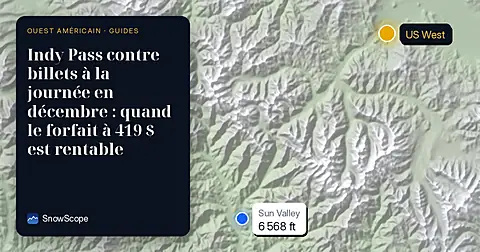
Indy Base Pass 419 $, Indy+ 469 $, deux jours dans chaque station partenaire. Nous l'avons comparé aux prix journaliers vérifiés de sept stations Indy en décembre, et à leurs chances de neige.
Les forfaits adultes de Lookout Pass pour 2026-2027 sont à 63 $ en semaine avec réservation, 75 $ le week-end. À mi-montagne, on avait 20 in (50 cm) le 15 décembre dans 85 % des hivers passés.

Les forfaits adultes 2026/27 de Montana Snowbowl sont à 78 $ en semaine et 85 $ le week-end. À mi-montagne, on avait 20 in (50 cm) au 15 décembre dans 83 % de nos hivers passés.

Ski Cooper maintient son tarif adulte en semaine à 49 $ pour 2026-27 (99 $ le week-end). À mi-montagne, on compte en général 26 in (66 cm) de neige le 15 décembre, 70 % des hivers au-dessus de 20 in.

Les forfaits de Sunlight démarrent à 74 $ et son Sunny 6 Pack coûte 349 $ si acheté avant le 30 novembre 2026. À mi-montagne, on avait 20 in (50 cm) au 15 décembre dans 72 % des hivers.

Les forfaits journée complète à Timberline coûtent 129 $ hors pointe et 161 $ en pointe ; le forfait après-midi est à 96 $ hors pointe. La mi-pente conserve en général 52 in (132 cm) le 15 décembre.

De Ski Cooper (49 $ en semaine, 99 $ le week-end) à Mt. Baker (98,80 $ contre 115,42 $) : les écarts de prix de décembre vérifiés dans sept stations de l'Ouest américain, avec leurs chances de neige.

Le 3-Pack 2026/2027 de Schweitzer coûte 249 $, soit 83 $ par jour selon la station elle-même. Le sommet garde en général 54 in (138 cm) de neige au 15 décembre.

Krvavec en décembre : journée 47 EUR, 6 jours 205 EUR, mais seulement 13 cm à mi-pente un 15 décembre typique, et 11 hivers sur 46 sans neige ce jour-là.

Skiez sur 157 km de pistes balisées à Serre Chevalier, où le sommet de la montagne a 100 % de chances d'être enneigé d'ici la mi-décembre.
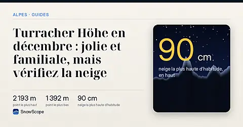
Turracher Höhe en décembre : 23 cm à mi-pente un 15 décembre typique, 39 % des hivers avec 30 cm avant Noël ; 6 jours en basse saison 353 EUR.

Hochkar en décembre : journées vues de 32,90 à 47,90 EUR selon les dates ; 38 cm à mi-pente un 15 décembre typique, en baisse depuis les années 1980.

Idre Fjäll en décembre : 32 cm à mi-pente un 15 décembre typique ; 65 % des hivers avec 30 cm à la mi-décembre, 76 % la semaine de Noël. Des chances honnêtes.

Brighton à partir de 72 $ contre Ski Cooper à 49 $ en semaine et Wolf Creek à 96 $ : les stations économiques de l'Utah et du Colorado comparées sur 46 hivers de neige en décembre.

Dix stations de ski européennes classées pour leur rapport qualité-prix en décembre, avec Les 2 Alpes en tête avec 75 cm de neige à mi-montagne.

Les forfaits journée de Brundage démarrent dès 65 $ certains jours ; à mi-montagne on avait 20 in (50 cm) de neige le 15 décembre dans 87 % de nos hivers passés. Des dates de fêtes à éviter.

Boí Taüll commence à 2 039 m et bat Baqueira Beret sur le prix du forfait, bien que la neige de début décembre demande un peu de patience.

Sälen en décembre : 28 cm un 15 décembre typique et 48 % des hivers avec 30 cm à la mi-décembre, moins qu'aux années 1980 ; Trysil, à côté, fait mieux.
Les forfaits journée adulte de Snow King démarrent à 100 $. Selon notre historique d'enneigement, le mi-versant affichait 20 in (50 cm) dès le 15 décembre dans 87 % des hivers : une façon économique de skier la vallée de Jackson.
Orcières Merlette offre une base élevée à 1 826 m et un forfait 6 jours dès 227 EUR, ce qui en fait un choix fiable pour un séjour au ski en décembre.

Alpe d'Huez vaut-elle le coup en décembre 2026 ? Nous vérifions les probabilités de neige, le prix de départ de 58,00 EUR et comparons avec Les 2 Alpes.

Les forfaits slovènes sont les moins chers (Krvavec 205 EUR les 6 jours), mais la neige naturelle de décembre y est rare ; Lachtal, le Hochkar et le glacier de la Möll font mieux.

Loveland vend des forfaits en ligne à 60 $ jusqu'au 13 décembre 2026, puis à 159 $ au guichet. La neige de début décembre est-elle assez bonne pour en profiter ? Nos 46 hivers passés répondent semaine par semaine.

Cauterets propose 25 km de pistes pour 46 EUR, mais notre historique d'enneigement montre que la meilleure chance d'avoir de la neige est la dernière semaine de décembre.

Skier à Lachtal en décembre : forfait journée 62 EUR, enfants jusqu'à 6 ans gratuits, 46 cm à mi-pente un 15 décembre typique, mais tendance nettement en baisse.

Les forfaits en ligne du White Pass démarrent à 69 $ hors pointe et 89 $ les jours de pointe, et la mi-montagne avait 20 in (50 cm) de neige le 15 décembre dans 87 % des hivers passés.

Skiez sur les 131 km de pistes de la Forêt Blanche en décembre avec un forfait six jours à 298 EUR.

Ruka en décembre : forfait 6 jours 265 EUR, journée 58 EUR ; 36 cm un 15 décembre typique, mais seulement 39 % des hivers avec 30 cm la première semaine.

À Monterosa Ski, le forfait journée en ligne va de 40,00 à 71,00 EUR. En décembre, la neige est en altitude : 124 cm habituels à 3 030 m, 6 cm à 1 207 m.

Chez Wolf Creek, le forfait adulte coûte 96 $ les jours normaux et 110 $ les jours de pointe pour la saison 2026-2027 ; à mi-montagne, l'enneigement atteignait 34 in (87 cm) un 15 décembre type.

Fellhorn/Kanzelwand en décembre : 63 cm au sommet (1965 m) un 15 décembre typique, 10 cm en bas ; forfait 6 jours de l'Avent à 344,50 EUR jusqu'au 20 décembre.
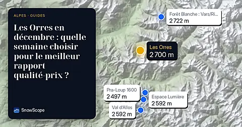
Planifiez votre séjour de décembre 2026 aux Les Orres en comparant les prix des forfaits hebdomadaires avec notre historique de neige de 46 hivers passés.

Hemavan en décembre : 82 cm à mi-pente un 15 décembre typique, chaque hiver avec 30 cm à la mi-décembre ; le décembre le plus enneigé de notre sélection nordique.
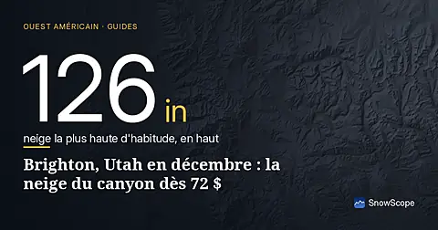
Les forfaits journée de Brighton démarrent à 72 $ pour 2026/27 en achat anticipé. À mi-montagne, on compte en général 37 in (94 cm) de neige le 15 décembre, contre 25 in (64 cm) à Park City.

Comparez Grandvalira et les stations espagnoles en décembre 2026 pour les hauteurs de neige, l'altitude des remontées et les prix à partir de 49,00 EUR.
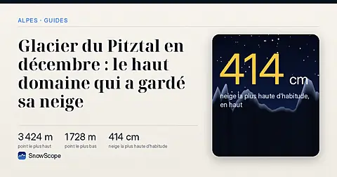
Glacier du Pitztal en décembre : 87 cm à mi-pente un 15 décembre typique, plus de neige qu'aux années 1980 ; forfait journée 77 EUR, 6 jours 410 EUR.

16 stations de ski américaines économiques classées selon leurs chances de neige en décembre sur 46 hivers passés, avec les prix à la journée vérifiés : de 49 $ en semaine à 125 $ et plus.

Pour une semaine de ski en famille à petit budget à Astún-Candanchú en décembre, visez la fin du mois, quand les pistes supérieures ont une bonne neige dans 67 % des hivers passés.

Allemagne en décembre : la Zugspitze et le haut du Fellhorn avaient 30 cm mi-décembre dans au moins 9 hivers sur 10 ; Sudelfeld, Brauneck et le Feldberg rarement.

Puy-Saint-Vincent propose un forfait adulte 1 jour à 44 EUR avec une bonne neige en décembre en altitude, comparé ici à son grand voisin Serre Chevalier.

Sur nos 46 derniers hivers, Grand Targhee affichait toujours au moins 20 in (50 cm) à mi-pente le 15 décembre. Le billet journée en ligne coûte entre 125 $ et 180 $ selon la date.

Oppdal en décembre : 60 cm en bas (585 m) un 15 décembre typique, 93 % des hivers avec 30 cm à la mi-décembre, mieux que le bas de Trysil.

Grimentz-Zinal propose 71 km de pistes et un enneigement fiable en altitude pour votre voyage en décembre, avec des forfaits 6 jours à CHF 339,00.

Autriche avant Noël : Galtür 258 EUR et Kühtai 269 EUR les 6 jours, avec 30 cm dans plus de 90 % des hivers ; les glaciers coûtent plus, les petites stations sont un pari.

Vous prévoyez un voyage en décembre à Baqueira Beret ? Consultez notre historique d'enneigement, les prix des forfaits à partir de 70,00 € pour une journée, et comparez avec Astún-Candanchú.
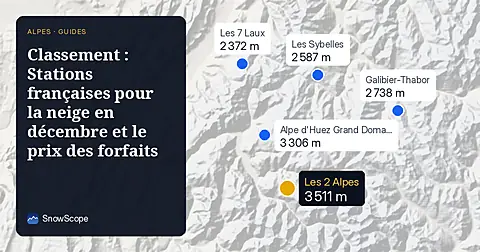
Nous classons les stations de ski françaises selon les probabilités de neige en décembre et le prix des forfaits, à partir de 36,00 EUR pour un forfait journée adulte aux Karellis.

À Oukaïmeden, décembre donne 18 cm à mi-pente dans un mois typique, contre 44 cm en février et 53 cm en mars. Ce que 46 hivers disent du bon mois pour skier.


Galtür en décembre : 55 cm à mi-pente un 15 décembre typique, 93 % des hivers avec 30 cm à la mi-décembre ; journée basse saison 55,50 EUR jusqu'au 18 décembre.
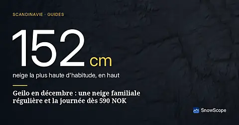
Geilo en décembre : 57 cm à mi-pente un 15 décembre typique, 96 % des hivers avec 30 cm à la mi-décembre ; journée à partir de 590 NOK (environ 56 EUR).
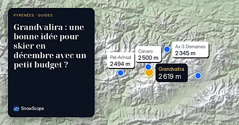
Grandvalira est souvent vendue comme une destination pas chère en décembre, pourtant la neige naturelle à la base n'atteint en moyenne que 9 cm lors des hivers passés.

Hemsedal en décembre : 70 cm à mi-pente et 106 cm au sommet un 15 décembre typique, mais 32 cm en bas ; Geilo tout près à partir de 590 NOK la journée.

Glacier d'Hintertux en décembre : 98 cm à 3245 m et 52 cm à mi-pente un 15 décembre typique ; forfait journée 82 EUR, 6 jours 399 EUR.

Comparez les probabilités de neige en décembre et les tarifs vérifiés de forfaits dès 40,00 EUR dans les domaines skiables italiens pour votre week-end en voiture.
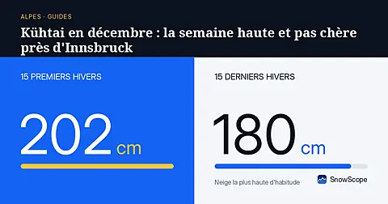
Skier à Kühtai en décembre : 60 cm au pied des pistes (1939 m) un 15 décembre typique, forfait 6 jours basse saison à 269 EUR jusqu'au 18 décembre.

Les 2 Alpes culmine à 3 511 m pour de la neige abondante en décembre 2026, avec un forfait adulte 6 jours à 266,50 EUR.

Les Karellis propose 45 km de pistes et un forfait adulte 6 jours à 191,00 EUR avec 98 % de chances d'avoir de la neige à mi-montagne fin décembre.

Levi en décembre : 38 cm un 15 décembre typique, 91 % des hivers avec 30 cm la semaine de Noël, et plus de neige qu'avant ; journée 60 EUR, 57 EUR en ligne.

Skiez à Livigno pour 51,50 EUR par jour avant le 18 décembre, quand la neige au sommet atteint 30 cm dans 100 % des hivers passés.
À Michlifen, 89 % des hivers n'ont presque pas de neige le 15 décembre (moins de 5 cm). Ce que 46 hivers disent du ski dans le Moyen Atlas en décembre.

Montgenèvre affiche 56 cm de neige habituelle en décembre à son pied de station, offrant aux skieurs du week-end une meilleure couverture précoce que Sestriere, de l'autre côté de la frontière.

Skier à Obertauern en décembre : 43 cm un 15 décembre typique à mi-pente, forfait 6 jours à 331 EUR avant Noël. Historique de neige et prix.

Oukaïmeden à la mi-décembre : 16 cm à mi-pente dans un hiver typique, 50 cm ou plus dans 11 % des hivers seulement. Date par date, ce que disent 46 hivers.

Oukaïmeden est à 50 km à vol d'oiseau de Marrakech. Comment réussir un week-end de ski en décembre : quand partir, quelles chances de neige, ce qu'on sait des prix.

Les 3 Vallées : 75,70 € le jour du 5 au 18 décembre 2026. Oukaïmeden : pas de tarif officiel en ligne, 16 cm à mi-pente mi-décembre. Le vrai comparatif.

Pila, au-dessus d'Aoste, combine un forfait journée fixe à 60,00 EUR et une neige fiable en décembre sur ses pistes d'altitude.

Les remontées de Saas-Fee atteignent 3 556 m, où notre historique montre que 100 % des hivers passés ont au moins 30 cm de neige à la mi-décembre.
12 stations nordiques en décembre : Hemavan, Hemsedal et Geilo avaient 30 cm à mi-pente mi-décembre dans 96 à 100 % des hivers ; journées finlandaises 58-60 EUR.

Chances de neige en décembre sur 46 hivers et prix journaliers vérifiés : Ski Cooper 49 $, Les 3 Vallées 75,70 €, Oukaïmeden sans tarif officiel. Là où une journée de ski pas chère en décembre fonctionne.

Découvrez les pistes tranquilles de St-Luc Chandolin, où la neige à mi-montagne atteint 30 cm dans 98 % des hivers fin décembre.

Trysil en décembre : 44 cm à mi-pente un 15 décembre typique, 83 % des hivers avec 30 cm à la mi-décembre ; les prix sont dynamiques, réservez tôt.

Valloire-Valmeinier propose 131 km de pistes et 98 % de chances d'avoir 30 cm de neige à mi-montagne mi-décembre.
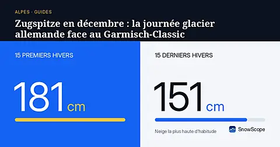
Zugspitze en décembre : 122 cm à 2627 m un 15 décembre typique, journée adulte 70,50 EUR en ligne ; le Garmisch-Classic en dessous 69 EUR, avec bien moins de neige.

Mölltaler Gletscher en décembre : 66 cm en bas (2103 m) et 128 cm à mi-pente un 15 décembre typique ; forfait 6 jours basse saison à 332 EUR.

Le Mt. Baker en décembre : 46 in (116 cm) de neige à mi-montagne pour un 15 décembre type, et un forfait à 98,80 $ du lundi au jeudi, vendu uniquement sur place le jour même.

Un débutant prudent peut-il faire confiance à Courmayeur en décembre, alors que la moyenne à mi-montagne est de 60 cm de neige sur nos hivers passés ?

Surface enneigée : 910 km² le 12 novembre, 1 100 km² aujourd'hui, 640 km² prévus le 17 novembre. À suivre. Pluie et neige mêlées : la neige n'est …

Bulletin neige dans les Alpes, 14 novembre. Pour trouver le plus de neige dans les Alpes aujourd'hui, regardez Saint-Luc (Suisse) : environ 110 cm en …

Åre en décembre : 40 cm à mi-pente un 15 décembre typique, 89 % des hivers avec 30 cm à la mi-décembre, mais une forte baisse au sommet depuis les années 1980.

Lisez la neige du jour dans les Pyrénées et vous obtenez poudreuse fraîche, neige fine de début de saison et de l'air doux qui peut laisser une …

Les Deux Alpes : 38–42 cm de neige fraîche en 72 heures (Alpes, 14 novembre). La Grave a reçu 53 cm de neige fraîche en 72 heures, dont 7 cm au cours …

Le manteau neigeux de La Grave a gagné 17 cm en une semaine pour atteindre 43 cm le 14 novembre, avec une prévision de 61 cm supplémentaires dans les 72 heures à venir alors qu'un système se déplace sur les Alpes.

La réserve de neige se remplit-elle comme d'habitude ? Nous avons comparé la neige du jour dans 5 stations dans l'Ouest canadien avec la même date …

Revelstoke, prévisions neige : jusqu'à 10–21 cm attendus d'ici le 16 novembre (Ouest canadien). À Whistler Blackcomb, l'isotherme 0 °C monte entre …

Dévoluy, tendance neige : jusqu'à 24–32 cm possibles d'ici le 16 novembre (Alpes). D'ici le 16 novembre, notre prévision donne 35 cm à Orcières …

Les stations de ski de l'Atlas ne gardent pas de neige sur leurs pentes aujourd'hui. La neige n'est stockée que sur les plus hauts sommets : environ …

Chutes de neige à Val Thorens, 13 novembre 2026 : 27 cm tombés au sommet (3175 m) et 17 cm à 2498 m en sept jours ; hauteur de neige de 50 cm et 8 cm. Sept prochains jours : 86 cm au sommet, 73 cm à 2498 m, limite pluie-neige bien sous le village. La saison habituelle sur 46 hivers.

La hauteur de neige à Chamonix le 13 novembre 2026, altitude par altitude : rien au fond de la vallée, 1 cm à 2001 m, 12 cm en haut de Brévent-Flégère (2486 m), 5 à 24 cm en haut des Grands Montets (2768 m). Environ un mètre prévu en altitude cette semaine, de la pluie dans la vallée. L'épaisseur habituelle sur 46 hivers.

Nos choix sont La Grave, Pfelders et Les Deux Alpes : nous avons regardé la hauteur de neige du jour, la neige fraîche des 72 dernières heures et la …

Bulletin neige des Menuires du 13 novembre 2026 : 28 cm au sommet (2838 m), rien au sol à 2112 m ni à 1386 m. Environ 80 cm attendus au sommet en sept jours, limite pluie-neige vers 1500 à 1700 m. Pourquoi Val Thorens, 450 m plus haut dans la même vallée, en a déjà plus.
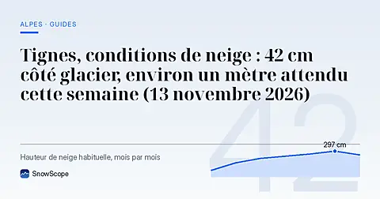
Les conditions de neige à Tignes le 13 novembre 2026 : 42 cm au sommet (3447 m), 12 cm à 2503 m, une vallée sans neige à 1559 m, et 99 cm prévus au sommet sur sept jours, avec de la pluie sous 1700 m environ. La comparaison avec 46 hivers passés.

La Grave domine les Alpes avec 78 centimètres et 61 centimètres de neige fraîche en 72 heures, alors que 33 centimètres supplémentaires sont prévus.

Notre modèle de neige prévoit que Whistler Blackcomb recevra 88 cm de neige fraîche d'ici le lundi 16 novembre 2026, dominant les stations mondiales.
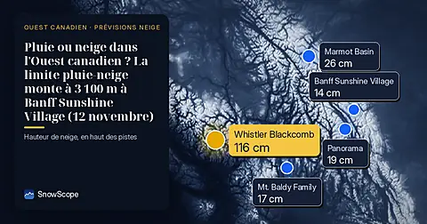
Entre 1 380 m et 3 410 m : c'est là que notre prévision place l'isotherme 0 °C dans l'Ouest canadien ces prochains jours. Aux heures les plus douces, …

Les cartes du jour regardent deux semaines devant dans les Pyrénées, du 13 novembre au 26 novembre. Elles viennent de les deux modèles mondiaux qui …

Saint François Longchamp n'a que 3 cm de neige, soit 12 % de l'enneigement habituel à cette époque, mais 110 cm sont prévus au cours des deux prochaines semaines.

Voici les nouvelles cartes des deux prochaines semaines dans l'Atlas (Maroc), du 13 novembre au 26 novembre : la neige fraîche attendue sur le …

Whistler Blackcomb, 116 cm de neige : la hauteur du jour en haut du domaine (12 novembre). 162 cm : c'est la neige en haut du domaine de Mount …

Piau-Engaly le 12 novembre : niveau de congélation à 3 060 m apporte un risque de pluie malgré 16 cm de neige fraîche en 72 heures.

Bulletin neige dans l'Atlas (Maroc), 12 novembre. Stations de l'Atlas aujourd'hui : pas de neige sur les pentes. De la neige seulement sur les plus …

Bulletin neige dans les Pyrénées, 12 novembre. D'ici le 15 novembre, la prévision apporte 33 cm à Cauterets Cirque du Lys, 29 cm à Piau-Engaly et …

Les conditions de neige à La Rosière sur notre calcul du 11 novembre : 24 cm au sommet (2799 m), mi-pente et village sans neige, et une prévision à sept jours de 108 cm au sommet et 61 cm à mi-pente. Le versant ensoleillé du Petit-Saint-Bernard en chiffres.

Le bulletin neige des Arcs selon notre modèle : 34 cm au sommet (3205 m), 2 cm à mi-pente, un bas sans neige, et jusqu'à 69 cm de neige fraîche prévus au sommet dans les sept prochains jours. Ce que Les Arcs ont d'habitude en novembre et en décembre.

Les conditions de neige à Méribel selon notre modèle du 11 novembre : 24 cm au sommet (2920 m), 1 cm à mi-pente, une vallée sans neige, et une prévision de 99 cm au sommet et 58 cm à mi-pente sur les sept prochains jours. L'hiver habituel de Méribel en chiffres.

Le plan des pistes d'Isola 2000 avec la neige du jour : 9 cm au sommet, 7 cm à mi-pente, 2 cm en bas après 31 cm en une semaine, comment s'organisent les secteurs Pelevos, Saint-Sauveur et Lombarde, et ce qu'apporte un hiver habituel.

Pas encore de neige à Oukaïmeden : 0 cm aux trois altitudes, rien ces sept derniers jours, rien dans la semaine à venir. Ce que donne un novembre habituel dans le Haut Atlas et quand viser le ski.

À 1 308 m à Dent de Vaulion, les 0 cm du jour dépassent ce que cette date a donné lors de 34 des 46 hivers passés (habituel : 0 cm) : une bonne …
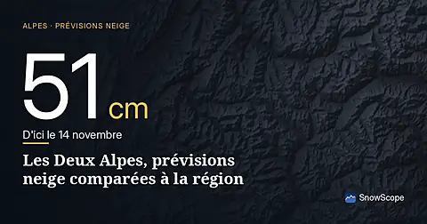
Les Deux Alpes, prévisions neige comparées à la région : 51 cm d'ici le 14 novembre. La surface enneigée est passée de 45 820 km² le 9 novembre à …
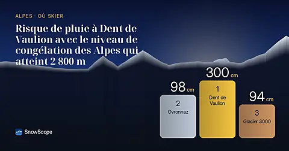
Les pentes hautes de Dent de Vaulion font face à la pluie avec le niveau de congélation atteignant 2 800 m jeudi ; les stations d'altitude reçoivent de la neige fraîche pour le week-end.

Depuis le 9 novembre, la neige est passée de 40 km² à 20 km² aujourd'hui ; pour le 14 novembre, notre prévision donne 10 km². Aujourd'hui, les pistes …

Nous avons pesé la neige déjà au sol, la neige fraîche des 72 dernières heures et ce qu'ajoute la prévision, et retenu Whistler Blackcomb, Tweedsmuir …

La Grave domine les Alpes avec 52 cm prévus en 24 heures au 11 novembre ; la neige précoce arrive des semaines avant l'accumulation maximale.

Au-dessus de 1 500 m autour du Toubkal, le sol a été blanc 94 jours pendant l'hiver 2025-26, le plus en 26 hivers d'images satellite. Jusqu'où la neige est descendue, quand elle est partie, et comment cet hiver se compare à 2008-09 et aux années sèches.

Nous avons comparé la neige du 10 novembre avec la neige la plus épaisse de chaque hiver, dans 46 stations de ski et sur 46 hivers. Un début enneigé aide, mais moins que beaucoup de skieurs ne le pensent.

Une tempête le 4 novembre a laissé 8 à 13 inches de neige fraîche sur cinq stations d'altitude du Colorado, près d'Aspen. Cinq jours plus tard, la moitié avait disparu. Ce que cela veut dire pour vos journées de poudreuse.

Combien de temps les Pyrénées sont restées blanches chaque hiver depuis 2000-01, vu par satellite, et la hauteur de neige à 10 stations aux longues séries. Trois hivers maigres d'affilée ont pris fin en 2025-26 ; cet automne a commencé normalement.

Une carte des pentes des Grands Montets et de sept autres domaines skiables montre quelle part du terrain dépasse 30°, 35° et 40°, et pourquoi ce seuil compte pour les avalanches.

Sur 46 hivers, les stations du versant italien et des Alpes du Sud françaises ont connu 24 fois un hiver relativement plus généreux que le versant nord. Le graphique, les grandes années et la météo qui les explique.

En décembre, la neige dépend d'abord de l'altitude. 46 hivers passés dans 676 stations des Alpes montrent combien de neige attendre le 1er, le 15 et le 22 décembre, de moins de 1 200 m à plus de 2 400 m.

Whistler Blackcomb a reçu 75 cm de neige nouvelle au sommet en une semaine, puis une tempête douce avec 124 mm d'eau. Un guide simple sur la sous-couche, la neige fraîche, la pluie et la croûte.

Un séjour de 3 jours pas cher au lac de Côme en décembre, avec les vrais prix 2026-27 : trains, bateaux, funiculaire et ski à Piani di Bobbio ou Madesimo, l'économie par rapport à Cortina et les chances de neige à Noël.

8 cm : c'est le maximum de neige que notre modèle trouve dans l'Atlas aujourd'hui. Les stations de ski de l'Atlas n'ont pas de neige sur leurs pentes …

La neige du jour à Livigno, ce que la prévision saisonnière européenne annonce pour décembre, et pourquoi l'altitude l'emporte sur un mois doux à Noël.

La neige du jour à Cortina, la prévision saisonnière européenne pour décembre et nos chances d'un Noël blanc dans l'est des Dolomites.

Où décembre 2026 s'annonce plus ou moins enneigé dans les Dolomites, du Val Gardena à Cortina : la prévision saisonnière européenne, notre carte et les chances d'un Noël blanc.

Piau-Engaly domine la prévision avec 37 cm de neige fraîche d'ici le 13 novembre ; 24 cm sont attendus le 12 novembre.

Combien d'eau la neige de l'Atlas pourrait garder en février 2027 : la prévision saisonnière européenne est environ 3 °C plus douce et plus humide à l'ouest et au sud, et les chances de neige restent faibles sur les bassins du Maroc.

La prévision saisonnière européenne rend janvier 2027 environ 2 °C plus doux sur l'Atlas. Notre tendance pour la hauteur de neige, l'eau de la neige et l'eau stockée pour les rivières du Maroc.

Le Bou Iblane est encore nu. La prévision saisonnière européenne annonce un décembre nettement plus doux, et sur tout le Moyen Atlas enneigé nos chances penchent vers moins de neige.

Chaque jour, nous listons les stations qui devraient recevoir le plus de neige fraîche, dans les 24 prochaines heures et jusqu'au 13 novembre, en …

Où décembre 2026 s'annonce plus ou moins enneigé du Montana au Nouveau-Mexique : la prévision saisonnière européenne et notre carte, massif par massif, avec le Colorado, l'Utah et les Rocheuses du Nord.

Le manteau neigeux des Écrins aux Alpes-Maritimes et au Piémont va-t-il se remplir comme d'habitude en décembre 2026 ? La prévision saisonnière européenne et notre carte, massif par massif.
Pas encore de neige à l'Oukaïmeden. La prévision saisonnière européenne voit un décembre plus doux sur le Haut Atlas, et notre carte montre des chances plus faibles sur presque tous les sommets.

La neige du jour aux Grands Montets, la prévision saisonnière européenne pour décembre et notre carte des secteurs plus ou moins enneigés autour du Mont-Blanc.

Vail en chiffres : un pic habituel d'environ 64 in (162 cm) à mi-pente sur 46 hivers passés, mars le mois le plus enneigé, plus domaine, accès et sécurité.
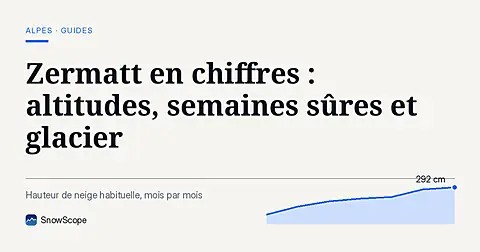
Zermatt en chiffres : où la neige tient, les mois les plus sûrs et comment rejoindre le village sans voitures, d'après 46 hivers passés.

Steamboat, Colorado, en famille : ce qui convient aux tout-petits, aux enfants, aux ados et aux parents, avec la neige de 46 hivers passés à trois altitudes.

Verbier est-il fait pour les débutants ? Quand la neige est-elle la meilleure ? Comment y aller ? Réponses sur les 4 Vallées et 46 hivers passés.

Comment passer un premier jour à Park City Mountain, Utah, et quand y aller : notre historique donne environ 71 in (180 cm) au pic habituel à mi-pente sur 46 hivers passés.

Le Sella Ronda depuis Sëlva dans le Val Gardena : cols de Gardena, Campolongo, Pordoi et Sella dans l'ordre, avec notre historique de neige de 46 hivers passés.

Mt Baker, État de Washington : environ 133 in (337 cm) au pic habituel à mi-pente sur 46 hivers passés, un record mondial de neige, aucun hébergement sur place.

Val d'Isère et l'Espace Killy pour débutants, skieurs moyens et experts, avec la neige de 46 hivers passés à trois altitudes.

Préparez Mammoth Mountain selon la saison : environ 93 in (235 cm) au pic habituel à mi-pente sur 46 hivers passés, mars le plus enneigé, longs printemps, hivers variables.

Kitzbühel est célèbre et basse. Ce que disent 46 hivers passés de la neige à 762 m, 1 377 m et 1 993 m, ce qui a changé, et quelles semaines sont le pari le plus sûr.

Les idées reçues sur Jackson Hole face aux faits et à notre historique : environ 80 in (204 cm) au pic habituel à mi-pente sur 46 hivers passés, sans baisse nette.

Nous avons comparé la carte de hauteur de neige SnowScope à 2 012 stations de mesure : RMSE 7,7 cm, biais -0,5 cm, neige ou pas de neige juste 88 % du temps. Ce qui marche, ce qui ne marche pas encore, et la suite.

Dix points pratiques pour un séjour de ski à Livigno : les routes, le froid, les boutiques détaxées, les deux versants et le meilleur moment pour la neige, d'après 46 hivers passés.

Rejoindre Telluride en hiver, aéroport par aéroport : Telluride Regional, Montrose, la route 145 avec la loi de traction du Colorado, et la télécabine gratuite vers Mountain Village.

Comment se déroule d'habitude une journée de neige à Whitewater, près de Nelson, de la météo du matin à la dernière descente, avec la neige de 46 hivers passés à trois altitudes.

Arc 1600, 1800, 1950 et 2000 comparés pour la neige, les pistes et l'accès, avec 46 hivers passés de notre historique de neige à trois altitudes des Arcs.
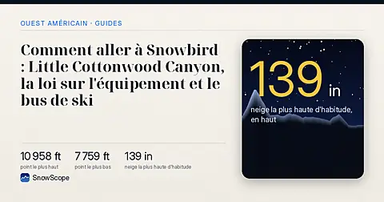
Aller à Snowbird en hiver : une seule route (SR-210), la loi sur l'équipement de l'Utah, le bus de ski UTA et le trajet depuis l'aéroport.

Whistler Blackcomb pour tous les niveaux, avec notre historique : environ 370 cm au pic habituel à mi-pente sur 46 hivers passés, mars et avril les plus enneigés.

Des paysans walser au Weißer Ring : les dates qui ont fait Lech Zürs, puis notre historique de neige hier et aujourd'hui, les quinze premiers de 46 hivers passés contre les quinze derniers.

Vers Palisades Tahoe en hiver : distances depuis Reno, chaînes obligatoires R-1 à R-3, parking réservé le week-end, bus TART gratuits.

Une liste pratique pour Stowe, Vermont : couches, protection du visage, masque, carres affûtées et chaufferettes, reliée à la neige de 46 hivers passés sur le Mount Mansfield.

Skier à Lake Louise en début de saison : pourquoi la station démarre tôt, à quoi ressemble d'habitude la neige de novembre et décembre sur 46 hivers passés, et comment skier une neige encore mince.
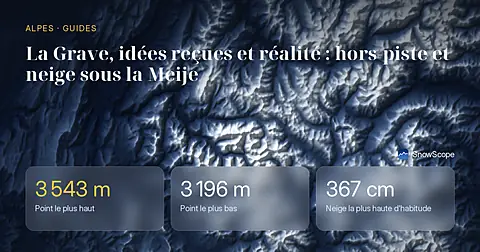
Ce qui est vrai à La Grave, la montagne hors-piste sous la Meije : terrain, sécurité, neige par mois et tendance, d'après 46 hivers passés.
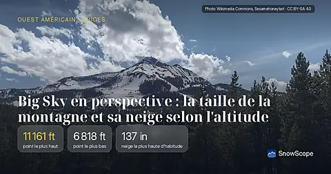
Big Sky, Montana, facile à se représenter : 5 850 acres sous le Lone Peak, et une neige environ cinq fois plus épaisse près du sommet qu'en bas sur 46 hivers passés.

L'Andorre n'a pas de grand aéroport : rejoindre Grandvalira depuis Barcelone ou Toulouse, le tunnel d'Envalira, la route CG2 et les parkings.
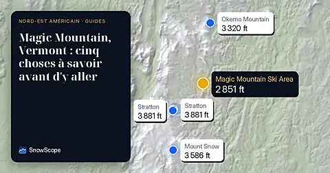
Magic Mountain à Londonderry, Vermont : une petite station indépendante avec des sous-bois raides, un vieux télésiège rouge et peu de neige naturelle. Cinq choses à savoir, avec la neige de 46 hivers passés.

Skiez d'abord en pensée tout le dénivelé de Revelstoke : la neige au sommet, à mi-pente et en bas dans la vallée sur 46 hivers passés, et quand chaque partie est au mieux.

Sept jours dans la Silvretta Arena, un par un : où est la neige, quand passer à Samnaun, et ce que disent 46 hivers passés de la neige d'Ischgl à trois altitudes.

Aspen Snowmass comparé : Snowmass a environ 75 in (190 cm) au pic habituel à mi-pente sur 46 hivers passés, Aspen Mountain environ 69 in (174 cm). Terrain, accès, sécurité.

Gourette et Cauterets côte à côte : altitudes, neige habituelle par mois, meilleures semaines et accès, d'après 46 hivers passés.
Mad River Glen, Vermont : neige naturelle, environ 30 in (75 cm) au pic habituel à mi-pente sur 46 hivers passés, février le plus enneigé. Trois façons de prévoir sa journée.

Banff Sunshine Village mois par mois : environ 100 cm à mi-pente en mars d'un hiver habituel sur 46 hivers passés, avril le plus enneigé en haut, saison jusqu'à fin mai.

Saas-Fee est sans voitures : le train jusqu'à Viège et le CarPostal 511, la route de la vallée du Rhône et les trains autos, les parkings et bus gratuits.

Environ 109 in (276 cm) : c'est le pic habituel d'Alta à mi-pente sur 46 hivers passés. Ici : pourquoi le snowboard reste à la maison, les meilleurs mois et comment monter le canyon.

L'Alpe d'Huez fait face au soleil. Comment organiser sa journée selon l'heure et l'altitude, avec la neige de 46 hivers passés, des villages bas au Pic Blanc.

Notre série de 46 hivers dans les Alpes, 108 points de 667 à 3 872 m : moins de jours de neige partout, nettement à 81 %. Ce qui a changé et pourquoi.


À l'altitude d'Oukaïmeden, notre série de 46 hivers montre 12 % de jours de neige en moins ; plus bas, le signal se perd. Ce que l'on sait.

Baqueira-Beret est dans le Val d'Aran, côté atlantique des Pyrénées. Ce que cela change pour sa neige, vérifié sur 46 hivers passés face à La Molina, et quand y aller.

Portrait de Bonneval-sur-Arc en Haute-Maurienne : toits de lauze, un col fermé, un petit domaine et une neige étonnamment épaisse, d'après 46 hivers passés de notre historique.

Comment passer une première journée de ski à Chamonix, des Grands Montets au-dessus d'Argentière au bon moment pour chaque pente, avec 46 hivers de données.

Cortina d'Ampezzo de trois façons : Tofana, Faloria-Cristallo et Cinque Torri-Lagazuoi, avec 46 hivers de données de neige à trois altitudes.

Chantarella, Marguns, Piz Nair, White Turf : les mots qu'on entend à St-Moritz, expliqués, et ce que 46 hivers passés de notre historique de neige disent de chaque altitude de la Corviglia.

Notre tableau quotidien suit la neige à venir : les stations où la prévision en annonce le plus dans les 24 prochaines heures et jusqu'au 12 …

Davos et Klosters partagent six montagnes de ski. Un plan jour par jour, en commençant par le Parsenn, avec ce que 46 hivers passés de notre historique disent de ses altitudes.

Quand réserver Courchevel et les 3 Vallées, quel village choisir et où la neige tient, d'après 46 hivers passés.
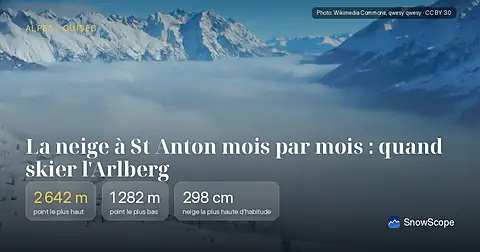
St Anton et Ski Arlberg au fil de l'hiver : la hauteur de neige habituelle chaque mois à trois altitudes, d'après 46 hivers passés.

Mount Washington retient 145 cm le 8 novembre, le plus profond de l'Ouest canadien, mais le niveau de congélation montera au-dessus du sommet d'ici le 11 novembre.

Y a-t-il plus de neige qu'il y a un an ? Nous avons comparé aujourd'hui avec le 8 novembre de l'hiver dernier dans 4 stations dans les Alpes : 0 ont …

Une année de neige à Sölden, phase par phase : quand les glaciers blanchissent, le week-end de Coupe du monde, le cœur de l'hiver et les semaines de printemps, d'après 46 hivers passés à trois altitudes.

Depuis le 6 novembre, la neige est passée de 0 sq mi (0 km²) à 788 sq mi (2 040 km²) aujourd'hui ; pour le 11 novembre, notre prévision donne …

50 cm en haut du domaine : voilà pourquoi La Grave est en tête de notre liste. Nous avons combiné la hauteur de neige du jour, la neige fraîche des …

Moins de jours de neige aux 120 points étudiés dans les Pyrénées depuis 1980-81, surtout sous 1 500 m : notre série de 46 hivers et la recherche.

Un carnet pratique sur Oukaïmeden, dans le Haut Atlas : quand la neige arrive, en quelle quantité, quelles pentes viser et comment y aller depuis Marrakech.

Comment réussir une journée à Luz-Ardiden, petit domaine au-dessus de Luz-Saint-Sauveur dans les Hautes-Pyrénées : la route, les deux secteurs, la neige de 46 hivers passés et les semaines à choisir.

Whistler Blackcomb a reçu 100 cm de poudreuse en 72 heures jusqu'au 8 novembre, mais elle est tombée de manière inégale : 96 cm au sommet, rien à la base.

Whistler Blackcomb a gagné 24 cm en une semaine pour atteindre 50 cm total ; 62 cm supplémentaires prévus en 72 heures alors que des tempêtes majeures frappent les montagnes (données du 8 novembre).

Michlifen, près d'Ifrane, a de la neige par courts épisodes plutôt qu'une saison. Ce que montrent 46 hivers passés, pourquoi la hauteur habituelle est nulle, et comment être là les bons jours.

Trois façons de passer une journée depuis Méribel : à l'est vers Courchevel, au sud vers Val Thorens, ou sur place au Mont Vallon, avec la neige de 46 hivers passés à trois altitudes.

Une tempête du Pacifique humide : 92 cm de neige fraîche sur les pistes hautes de Whistler du 8 au 10 novembre, pluie en dessous d'environ 1 620 m.
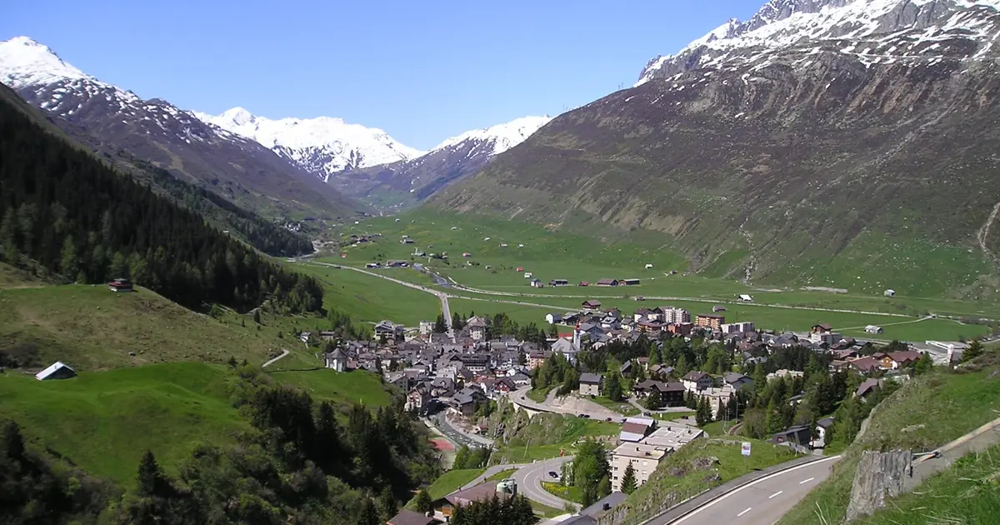
Air doux pour les prochaines pluies et chutes de neige : la limite pluie-neige se situe surtout entre 2 190 et 2 850 m. Carte, graphique et animation.

Limite pluie-neige proche de 3 710 m du 8 au 12 novembre : pluie à Oukaïmeden et Imlil, neige au sommet du Toubkal. Carte et graphique.

D'ici le 10 novembre, notre prévision donne 103 cm à Whistler Blackcomb, 99 cm à Ski Callaghan et 74 cm à Mount Cain Alpine Park. Les chiffres des …

Environ 65 mm sur le Toubkal d'ici le 12 novembre, mais l'isotherme 0 °C reste vers 4 000 m : pluie à Oukaïmeden et dans les vallées, neige au sommet seulement.

Orcières Merlette mène les prévisions des Alpes avec 36 cm de neige nouvelle en trois jours, principalement les 9–10 novembre, selon les données du 7 novembre.

Les stations de ski de l'Atlas n'ont pas de neige sur leurs pentes aujourd'hui. Notre modèle de neige n'en trouve que sur les plus hauts sommets : …

Nous avons comparé la neige du jour dans 3 stations dans les Alpes avec la même date lors de chacun des 46 hivers passés. 0 sont nettement au-dessus …

Le tableau du jour classe les stations d'Europe, du Maroc et d'Amérique du Nord selon la neige fraîche prévue dans les 24 prochaines heures et …

Ski Eldorado prévoit 11 cm de neige fraîche, mais l'isozéro atteint 3 460 m le 6 novembre, retardant l'arrivée de la neige au Nord-Est.
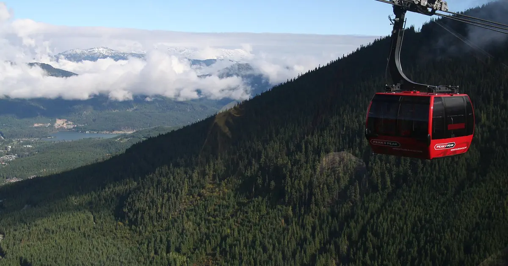
D'ici le 9 novembre, notre prévision donne 74 cm à Whistler Blackcomb, 63 cm à Ski Callaghan et 50 cm à Mount Cain Alpine Park. Les chiffres des …

Oukaimden (Maroc) a la neige la plus épaisse dans l'Atlas (Maroc) aujourd'hui, avec environ 1 cm sur le haut du domaine. Suivent Habri avec 0 cm, …

Nous avons combiné la hauteur de neige du jour, la neige fraîche des 72 dernières heures et la prévision pour retenir Isola 2000, Artesina et …

Bonneval-sur-Arc (France) a la neige la plus épaisse dans les Alpes aujourd'hui, avec environ 52 cm sur le haut du domaine. Suivent La Grave avec …
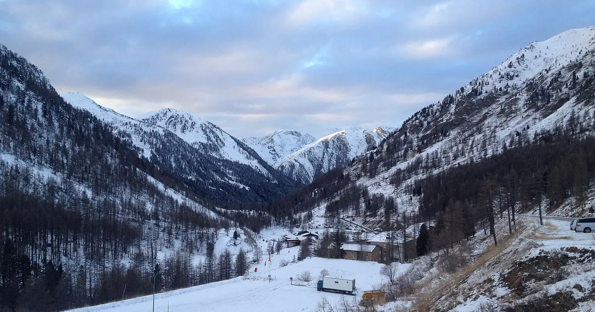
Isola 2000 a reçu 62 cm de neige fraîche en 72 heures, dont 7 cm au cours des dernières 24 heures. La station compte maintenant environ 19 cm sur le …

Prévision Whistler Blackcomb : 74 cm en 72 heures ; les semaines 13, 12, 11 apportent les neiges les plus abondantes de l'année historiquement. Prévision du 5 novembre.

Les stations de ski de l'Atlas n'ont pas de neige sur leurs pentes aujourd'hui. Notre modèle de neige n'en trouve que sur les plus hauts sommets : …

58 centimètres de neige fraîche sont tombés sur les Alpes du Sud en 72 heures ; les meilleures semaines de poudreuse culminent en février, données du 5 novembre.

C'est à Silver Star qu'il y a le plus de neige dans l'Ouest canadien : environ 112 cm sur le haut du domaine, selon notre modèle de neige. Viennent …

D'ici le 8 novembre, notre prévision donne 94 cm à Whistler Blackcomb, 93 cm à Ski Callaghan et 70 cm à Tweedsmuir Ski Club. Les chiffres des …

Whistler Blackcomb affiche 27 cm le 5 novembre, soit seulement 41 % de la normale pour cette date. Un système majeur apporte 22 cm de neige dans les 24 prochaines heures.

Le 4 novembre, Les Deux Alpes compte 45 centimètres au sommet mais zéro en bas — un écart d'altitude extrême en début de saison.

Nous avons comparé la neige du jour dans 4 stations dans les Pyrénées avec la même date lors de chacun des 46 hivers passés. 1 sont nettement …

Quelles stations ont presque toujours de la neige ? Nous avons étudié 46 hivers passés (1980-81–2025-26) pour chaque station de notre carte et compté …

Les hauteurs de neige en Alpes sont en retrait par rapport à la normale en début novembre, avec seulement 55 cm dans les meilleures stations au 3 novembre.

D'ici le 6 novembre, notre prévision donne 37 cm à Chabanon, 34 cm à Dévoluy et 33 cm à Chaillol. Les chiffres des stations de ski sont des …

Oukaimden a reçu 14 cm de neige fraîche en 72 heures, dont 5 cm au cours des dernières 24 heures. La station compte maintenant environ 3 cm sur le …
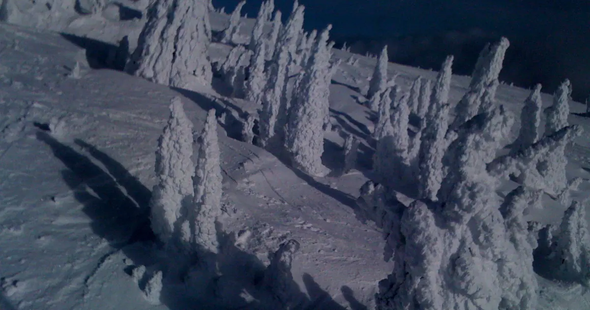
C'est à Big White qu'il y a le plus de neige dans l'Ouest canadien : environ 91 cm sur le haut du domaine, selon notre modèle de neige. Viennent …

Chaque jour, nous listons les stations qui devraient recevoir le plus de neige fraîche, dans les 24 prochaines heures et jusqu'au 6 novembre, en …
La neige au 3 novembre 2026 : Kendall Mountain 53 in (134 cm) après une tempête, Big White 91 cm, les Alpes jusqu'à 55 cm à Bonneval-sur-Arc. Modèle et mesures.